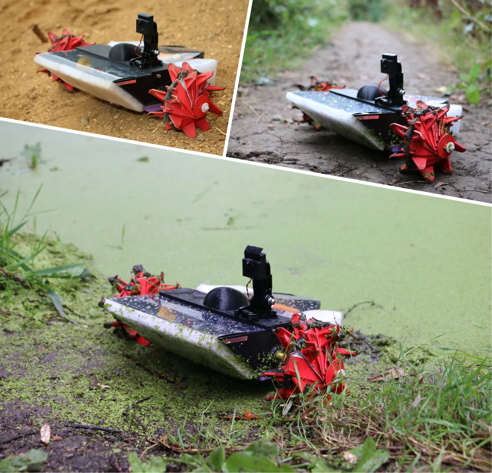
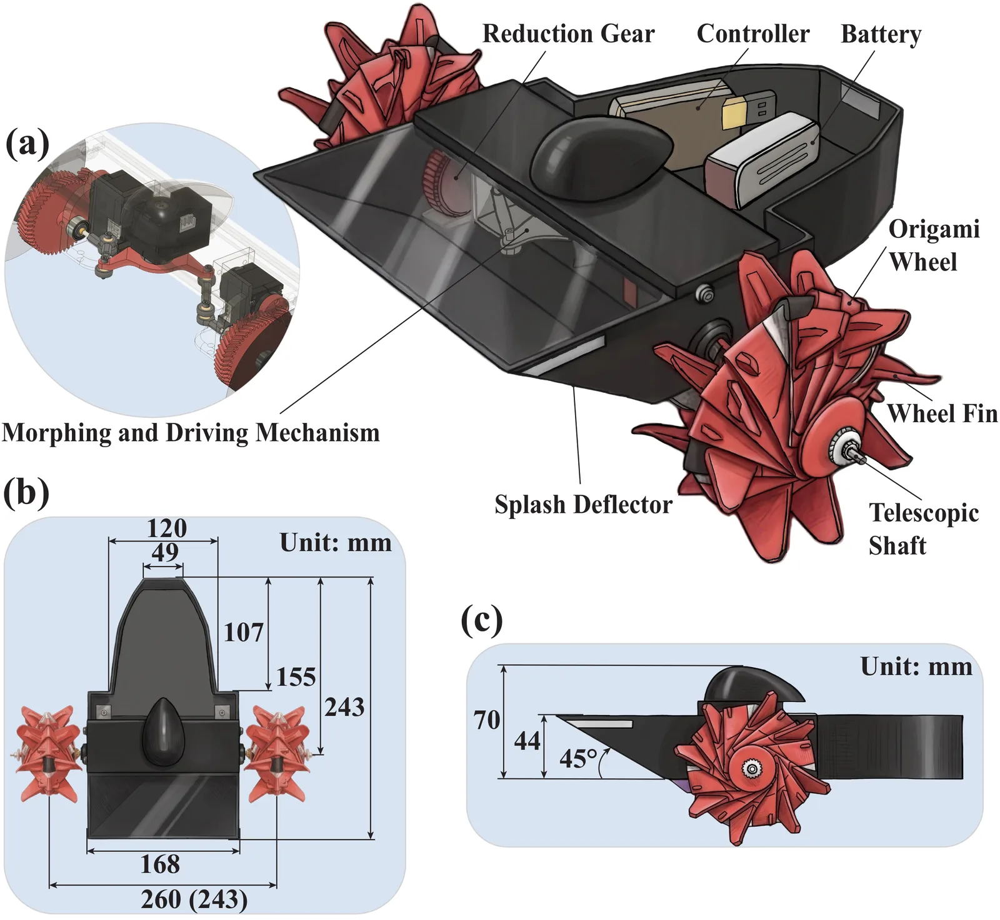
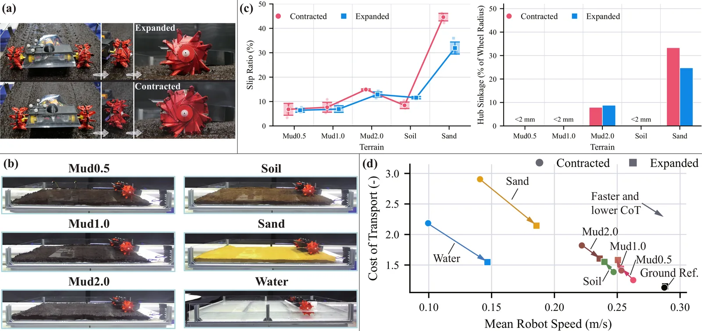

O Desafio da Locomoção em Pântanos
Monitorar ecossistemas úmidos, como pântanos e manguezais, é crucial para a conservação da biodiversidade e o entendimento das mudanças climáticas. Esses ambientes armazenam carbono e regulam o ciclo da água, mas a observação humana é frequentemente interrompida por variações sazonais no nível da água e na consistência do solo. Robôs oferecem uma alternativa para reduzir o distúrbio humano e coletar dados contínuos, mas enfrentar esses terrenos é um problema clássico de engenharia robótica.
A dificuldade central reside na heterogeneidade do terreno. Um pântano não é uma superfície uniforme; ele combina solo firme, areia solta, lama viscosa e água aberta. Superfícies firmes favorecem o rolamento com baixa resistência, enquanto terrenos deformáveis exigem uma área de contato maior e maior engajamento de cisalhamento para evitar que as rodas afundem ou deslizem. Rodas de geometria fixa, padrão na maioria dos robôs móveis, não conseguem adaptar sua forma a essas mudanças abruptas.
Estudos anteriores demonstraram que rodas transformáveis ou inspiradas em origami podem reconfigurar seu contato com o solo. No entanto, integrar essa reconfiguração axial com a transmissão de torque e a presença de aletas para interação com o terreno em um mecanismo compacto permanece um desafio. Além disso, a performance locomotora desses sistemas multimodais não foi suficientemente caracterizada em condições reais de pântano, que incluem transições suaves e abruptas entre terra e água.
Para preencher essas lacunas, os autores do paper MOSS (Multimodal Origami Swamp Robot System) desenvolveram uma plataforma robótica anfíbia compacta equipada com rodas origami impressas em 3D. O sistema foi projetado para mudar sua geometria de contato dinamicamente, permitindo que um único robô traverse ambientes terrestres e aquáticos significativamente diferentes. O trabalho não apenas apresenta o design, mas também fornece uma avaliação experimental sistemática do desempenho locomotor em condições representativas.

Mecanismo de Transformação e Design das Rodas
O coração do sistema MOSS são suas rodas origami. Diferente de rodas convencionais, estas são impressas em 3D usando um padrão de origami modificado. Cada roda é formada pela colagem de duas peças idênticas impressas em anel e subsequentemente dobradas. O design incorpora aletas integradas e recortes de conformidade (compliance cutouts) que permitem a deformação controlada. A geometria da roda não é estática; ela pode alternar entre uma configuração contraída e uma expandida.
Na configuração contraída, a roda possui uma largura menor e um diâmetro de corpo reduzido. Essa forma é projetada para minimizar a resistência ao rolamento em superfícies mais firmes, como solo compacto ou lama menos saturada. A configuração expandida, por outro lado, aumenta significativamente a largura e o diâmetro da roda, além de alterar a orientação das aletas. Essa expansão aumenta a área de contato com o solo e o engajamento do terreno, o que é crítico para reduzir o deslizamento (slip) e o afundamento do cubo em superfícies moles, como areia ou lama profunda.
A transição entre essas configurações é acionada por um mecanismo de manivela central. Um atuador servo controla uma articulação de manivela que puxa ou empurra os lados das rodas. Este movimento axial único altera simultaneamente a largura, o diâmetro do corpo e a orientação das aletas. A simplicidade deste mecanismo é intencional: ele evita a complexidade de sistemas de troca de rodas ou múltiplos atuadores independentes, mantendo o robô compacto e leve.
Um dos desafios de engenharia mais interessantes aqui é como transmitir o torque de tração enquanto a roda muda de forma axialmente. Se o eixo de transmissão fosse rígido, a deformação da roda quebraria o acoplamento. Para resolver isso, os autores utilizaram um design de eixo telescópico. Este eixo separa o movimento de morfing axial da transmissão de torque, fornecendo um caminho de carga guiado que mantém a integridade estrutural durante a transformação. Isso permite que o motor continue girando a roda enquanto ela se expande ou contrai.

Protocolo Experimental e Métricas de Desempenho
Para validar a hipótese de que a geometria adaptativa oferece benefícios locomotores dependentes do terreno, os autores realizaram uma bateria rigorosa de testes. A avaliação ocorreu em quatro tipos principais de superfície: solo firme, areia, lama com varying conteúdo de água (Mud0.5, Mud1.0, Mud2.0) e água aberta. A métrica principal de eficiência foi o Custo de Transporte (Cost of Transport - CoT), que mede a energia consumida por unidade de peso por metro percorrido. Um CoT menor indica maior eficiência energética.
Além do CoT, os pesquisadores mediram o deslizamento (slip) e o afundamento do cubo (hub sinkage). O deslizamento refere-se à diferença entre a velocidade teórica da roda e a velocidade real de deslocamento do robô, indicando quanta tração está sendo perdida. O afundamento do cubo é crítico em terrenos moles, pois um afundamento excessivo pode travar o robô. Os testes incluíram não apenas a locomoção em configurações fixas, mas também testes de morfing em movimento e transições terrestres-aquáticas.
Os testes de morfing em movimento avaliaram a capacidade do robô de mudar de configuração enquanto se locomove, uma operação que impõe cargas dinâmicas ao mecanismo. Os testes de transição simularam a mudança natural de um pântano, onde o robô passa de solo firme para lama e finalmente para água. Além dos testes de laboratório controlados, foram realizados testes ao ar livre em terreno deformável natural, com payloads modulares de sensoriamento, para demonstrar a viabilidade operacional em condições reais.
A escolha das superfícies de teste foi deliberada para cobrir o espectro de desafios encontrados em pântanos. A lama com diferentes conteúdos de água permite isolar o efeito da viscosidade e da capacidade de suporte do solo. A areia testa a resistência ao cisalhamento e a tendência de afundamento. A água testa a propulsão hidrodinâmica e a flutuabilidade. Essa abordagem sistemática permite uma comparação direta de como a configuração da roda (contraída vs. expandida) impacta o desempenho em cada cenário.

Resultados: Eficiência Dependente do Terreno
Os resultados confirmam que não existe uma configuração de roda universalmente superior. A eficiência energética depende criticamente das propriedades do terreno. A configuração contraída demonstrou ser mais eficiente em solo firme e em lamas menos saturadas (Mud0.5 e Mud1.0). Nessas superfícies, a menor área de contato e o diâmetro reduzido minimizam a resistência ao rolamento e o trabalho necessário para deformar o solo, resultando em um CoT mais baixo.
Por outro lado, a configuração expandida superou a contraída em superfícies mais moles e aquáticas. Em lama saturada (Mud2.0), areia e água, a configuração expandida reduziu o CoT em até 29% em comparação com a contraída. Isso ocorre porque, nesses terrenos, a limitação não é a resistência ao rolamento, mas sim a capacidade de suporte e a tração. A maior área de contato da roda expandida distribui o peso do robô, reduzindo o afundamento, e as aletas expandidas fornecem maior engajamento de cisalhamento, reduzindo o deslizamento.
Em areia, a configuração expandida foi particularmente eficaz em reduzir tanto o deslizamento quanto o afundamento do cubo. Em lama molhada, a redução do deslizamento foi significativa, permitindo que o robô mantivesse a tração onde a roda contraída simplesmente patinava. Na água, as aletas expandidas atuaram como remos ou hélices, aumentando a velocidade de propulsão e a eficiência da locomoção aquática. Esses dados mostram claramente que a morfologia da roda deve ser adaptada ao tipo de interação solo-robô predominante.
Os testes de morfing em movimento não apresentaram falhas observadas, indicando que o mecanismo de manivela e o eixo telescópico são robustos o suficiente para suportar as cargas dinâmicas da transição. O robô conseguiu mudar de configuração sem perder estabilidade ou travar. Isso é um resultado importante para aplicações práticas, onde o robô pode precisar ajustar sua locomoção rapidamente ao encontrar uma mudança de terreno inesperada.
Transições e Limitações Operacionais
Um dos testes mais desafiadores foi a traversia contínua de transições solo-lama-água. Em 10 tentativas, o MOSS conseguiu completar a transição com sucesso em 8 delas. As duas falhas não foram causadas por problemas no mecanismo de rodas, mas sim por limitações de clearance do chassi. Especificamente, na fronteira rígida entre a lama e a água, o chassi do robô raspou no fundo ou na interface, impedindo a progressão.
Essa falha destaca uma limitação de design importante: a altura do chassi e a folga mínima são críticas em terrenos irregulares e transições abruptas. Embora as rodas se adaptem perfeitamente, o corpo do robô permanece rígido. Em um cenário real de pântano, onde a profundidade da água e a consistência da lama podem variar rapidamente, um chassi muito baixo pode entrar em contato com obstáculos ou superfícies duras, causando atolamento ou danos.
Os testes ao ar livre validaram a operação em terreno deformável natural e em água, com payloads modulares. Isso demonstra que o sistema não é apenas um protótipo de laboratório, mas uma plataforma funcional para coleta de dados. No entanto, a necessidade de intervenção manual para ajustar o clearance ou evitar obstáculos pontiagudos sugere que a autonomia completa ainda requer melhorias no planejamento de trajetória e na percepção do terreno.
Os autores também notaram que a força necessária para manter a configuração expandida (shape-holding power) é um fator a ser considerado. O mecanismo atual depende da fricção e do design geométrico para manter a forma sob carga. Em cenários de alta resistência, isso pode consumir energia adicional ou exigir um torque maior do atuador. Futuras iterações visam reduzir essa força de retenção, possivelmente através de mecanismos de auto-travação.
Conclusões e Direções Futuras
O paper MOSS demonstra que a morfologia adaptativa das rodas pode fornecer benefícios locomotores dependentes do terreno, permitindo que um único robô compacto traverse ambientes terrestres e aquáticos. A integração de rodas origami 3D impressas com um mecanismo de transformação axial e um eixo telescópico é uma solução elegante para o problema de geometria fixa. Os resultados experimentais mostram claramente que a configuração contraída é preferível para solo firme, enquanto a expandida é superior para areia, lama molhada e água.
Apesar dos avanços, o trabalho deixa várias questões em aberto. A eficiência energética global ainda é limitada pela ineficiência do mecanismo de transformação em si, que consome energia para mudar de configuração. Além disso, a falta de um sistema de auto-travação significa que o atuador deve manter tensão constante para manter a forma expandida, o que pode drenar a bateria em operações de longa duração.
Trabalhos futuros propõem melhorar a tração com materiais de contato de maior atrito e desenvolver mecanismos de morfing com auto-travação para reduzir o consumo de energia de manutenção. A interface modular do robô permite a integração de sensores como microfones, ferramentas de amostragem ambiental e câmeras infravermelhas para monitoramento de biodiversidade e inspeção pós-enchentes.
A próxima grande etapa é a combinação de sensoriamento de terreno a bordo com navegação autônoma. O objetivo é que o robô possa analisar o terreno à frente e selecionar automaticamente a configuração de roda mais adequada antes de entrar na área problemática. Ensaios de campo mais amplos serão necessários para validar essa estratégia de controle consciente do terreno em ambientes não estruturados e imprevisíveis. O MOSS é um passo sólido em direção a robôs ecológicos verdadeiramente versáteis.
O que fica
- Rodas origami mudam de largura e diâmetro com um único mecanismo de manivela, sem necessidade de troca de rodas.
- Configuração compacta é mais eficiente em solo firme; a expandida reduz deslizamento em areia e lama molhada.
- Eixo telescópico transmite torque enquanto permite a deformação axial, mantendo a integridade estrutural.
- Testes mostram sucesso em transições terra-água, mas falhas ocorreram devido a limitações de clearance do chassi.
Paper original: MOSS: Multimodal Origami Swamp Robot System
Comentários
Nenhum comentário ainda. Seja o primeiro.